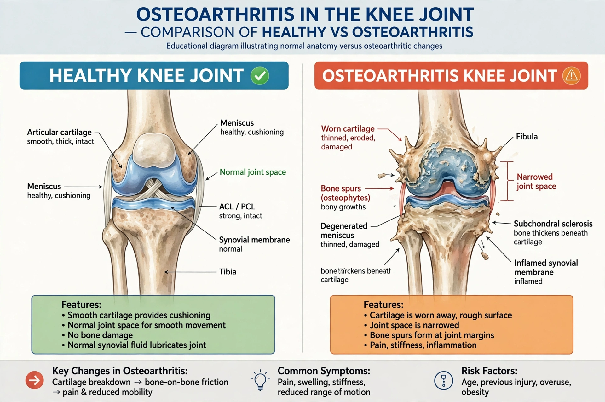

| Osteoarthritis | |
|---|---|
 | |
| Specialty | Rheumatology, orthopedics |
| Symptoms | Joint pain, stiffness, swelling, reduced range of motion |
| Risk factors | Age, obesity, joint injury, genetics |
Osteoarthritis (OA) is a type of joint disease resulting from breakdown of articular cartilage and underlying bone. It is the most common form of arthritis, affecting hundreds of millions worldwide, most often the knees, hips, hands, and spine.
Pain worsened by activity and relieved by rest, brief morning stiffness (under 30 minutes), crepitus, bony enlargement, and loss of function develop gradually. Unlike inflammatory arthritides, systemic features are absent.
OA is a whole-joint disorder involving cartilage loss, subchondral bone thickening, osteophyte formation, and changes in the synovial membrane and synovial cavity. Risk factors include ageing, obesity, prior injury, malalignment, and heredity. Radiographs show joint-space narrowing, osteophytes, and sclerosis.
Core treatment is exercise, weight loss, education, and analgesia (paracetamol, topical and oral NSAIDs). Intra-articular injections and, for end-stage disease, joint replacement surgery are options. No drug is proven to modify disease course.